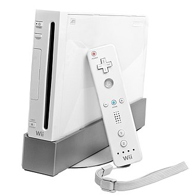

XBox 360
The Xbox 360 is a home video game console developed by Microsoft. As the successor to the original Xbox, it is the second console in the Xbox series. It competed with Sony's PlayStation 3 and Nintendo's Wii as part of the seventh generation of video game consoles. It was officially unveiled on MTV on May 12, 2005, with detailed launch and game information announced later that month at the 2005 Electronic Entertainment Expo.
The Xbox 360 features an online service, Xbox Live, which was expanded from its previous iteration on the original Xbox and received regular updates during the console's lifetime. Available in free and subscription-based varieties, Xbox Live allows users to: play games online; download games (through Xbox Live Arcade) and game demos; purchase and stream music, television programs, and films through the Xbox Music and Xbox Video portals; and access third-party content services through media streaming applications. In addition to online multimedia features, it allows users to stream media from local PCs. Several peripherals have been released, including wireless controllers, expanded hard drive storage, and the Kinect motion sensing camera. The release of these additional services and peripherals helped the Xbox brand grow from gaming-only to encompassing all multimedia, turning it into a hub for living-room computing entertainment.
Launched worldwide across 2005–2006, the Xbox 360 was initially in short supply in many regions, including North America and Europe. The earliest versions of the console suffered from a high failure rate, indicated by the so-called "Red Ring of Death", necessitating an extension of the device's warranty period. Microsoft released two redesigned models of the console: the Xbox 360 S in 2010, and the Xbox 360 E in 2013. Xbox 360 is the sixth-highest-selling home video game console in history, and the highest-selling console made by an American company. Although not the best-selling console of its generation, the Xbox 360 was deemed by TechRadar to be the most influential through its emphasis on digital media distribution and multiplayer gaming on Xbox Live.
The Xbox 360's successor, the Xbox One, was released on November 22, 2013. On April 20, 2016, Microsoft announced that it would end the production of new Xbox 360 hardware, although the company will continue to support the platform.
PlayStation 3
The PlayStation 3 (PS3) is a home video game console developed by Sony Computer Entertainment. It is the successor to PlayStation 2, and is part of the PlayStation brand of consoles. It was first released on November 11, 2006 in Japan,[9] November 17, 2006 in North America, and March 23, 2007 in Europe and Australia. The PlayStation 3 competed primarily against Microsoft's Xbox 360 and Nintendo's Wii as part of the seventh generation of video game consoles.
The console was first officially announced at E3 2005, and was released at the end of 2006. It was the first console to use Blu-ray Disc as its primary storage medium. The console was the first PlayStation to integrate social gaming services, including the PlayStation Network, as well as the first to be controllable from a handheld console, through its remote connectivity with PlayStation Portable and PlayStation Vita. In September 2009, the Slim model of the PlayStation 3 was released. It no longer provided the hardware ability to run PS2 games. It was lighter and thinner than the original version, and featured a redesigned logo and marketing design, as well as a minor start-up change in software. A Super Slim variation was then released in late 2012, further refining and redesigning the console.
During its early years, the system was negatively received, due to its high price ($599 for a 60-gigabyte model, $499 for a 20 GB model), a complex processor architecture, and lack of quality games but was praised for its Blu-ray capabilities and "untapped potential". The reception would get more positive over time. The system had a slow start in the market but managed to recover, particularly after the introduction of the Slim model. Its successor, the PlayStation 4, was released later in November 2013. On September 29, 2015, Sony confirmed that sales of the PlayStation 3 were to be discontinued in New Zealand, but the system remained in production in other markets. Shipments of new units to Europe and Australia ended in March 2016, followed by North America which ended in October 2016. Heading into 2017, Japan was the last territory where new units were still being produced until May 29, 2017, when Sony confirmed the PlayStation 3 was discontinued in Japan.
Nintendo Wii
The Wii[g] (/wiː/ WEE) is a home video game console developed and marketed by Nintendo. It was first released on November 19, 2006 in North America and in December 2006 for most other regions. It is Nintendo's fifth major home game console, following the GameCube, and is a seventh generation home console alongside Microsoft's Xbox 360 and Sony' s PlayStation 3.
In developing the Wii, Nintendo president Satoru Iwata directed the company to avoid competing with Microsoft and Sony on computational graphics and power and instead to target a broader demographic of players through novel gameplay. Game designers Shigeru Miyamoto and Genyo Takeda led the console's development under the codename Revolution. The primary controller for the Wii is the Wii Remote, a wireless controller with both motion sensing and traditional controls which can be used as a pointing device towards the television screen or for gesture recognition. The Wii was the first Nintendo console to directly support Internet connectivity, supporting both online games and for digital distribution of games and media applications through the Wii Shop Channel. The Wii also supports wireless connectivity with the Nintendo DS handheld console for selected games. Initial Wii models included full backward compatibility support for the GameCube. Later in its lifecycle, two lower-cost Wii models were produced: a revised model with the same design as the original Wii but removed the GameCube compatibility features, and the Wii Mini, a compact, budget redesign of the Wii which further removed features including online connectivity and SD card storage.
Because of Nintendo's reduced focus on computational power, the Wii and its games were less expensive to produce than its competitors. The Wii was extremely popular at launch, causing the system to be in short supply in some markets. A bundled game, Wii Sports, was considered the killer app for the console. Within a year of launch, the Wii became the sales-leader against the other seventh-generation consoles, and by 2013, had surpassed over 100 million units sold. Total lifetime sales of the Wii had reached over 101 million units, making it Nintendo's best-selling home console, and as of 2020, the fourth best-selling home console to date.
The Wii repositioned Nintendo as a key player in the video game hardware marketplace. The introduction of motion-controlled games via the Wii Remote led both Microsoft and Sony to develop their own competing products—the Kinect and PlayStation Move, respectively. Nintendo found that, while the Wii had broadened the demographics that they wanted, the core gamer audience had shunned the Wii. The Wii's successor, the Wii U, sought to recapture the core gamer market with additional features atop the Wii. The Wii U was released in 2012, and Nintendo continued to sell both units through the following year. The Wii was formally discontinued in October 2013, though Nintendo continued to produce and market the Wii Mini through 2017, and offered a subset of the Wii's online services through 2019.